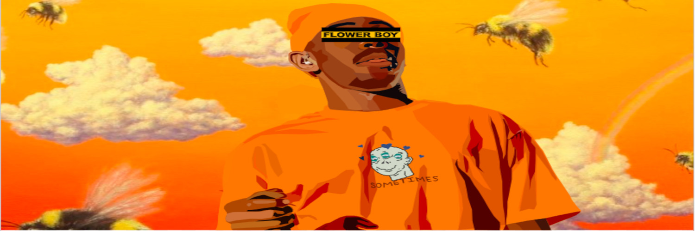
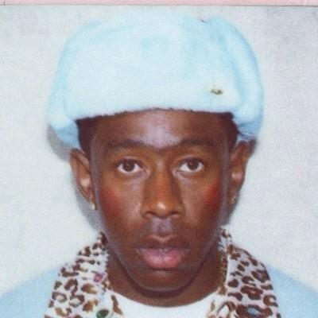

Tyler the Creator
Tyler, the Creator (born March 6, 1991), is an American rapper and record producer from Los Angeles,
California. He is the leader of hip hop crew OFWGKTA. He has rapped on, and produced for, nearly every
OFWGKTA release.
On February 11, 2011, Tyler released the music video for the first single "Yonkers" from his upcoming second
album, Goblin, due to be released April 2011. The video has received much recognition from various online
media outlets. An extended version with a third verse can be purchased on iTunes
After the release of "Yonkers", XL Recordings announced Tyler had signed a one album deal with the label
On February 16, 2011, Tyler appeared on Late Night with Jimmy Fallon, performing "Sandwitches" with fellow
OFWGKTA member Hodgy Beats. This was their first television appearance.
He is one crazy emcee and he honestly just doesnt give a flip about cereal. It's not that he doesnt care
about things, its more like he doesnt give a flip a lot.
